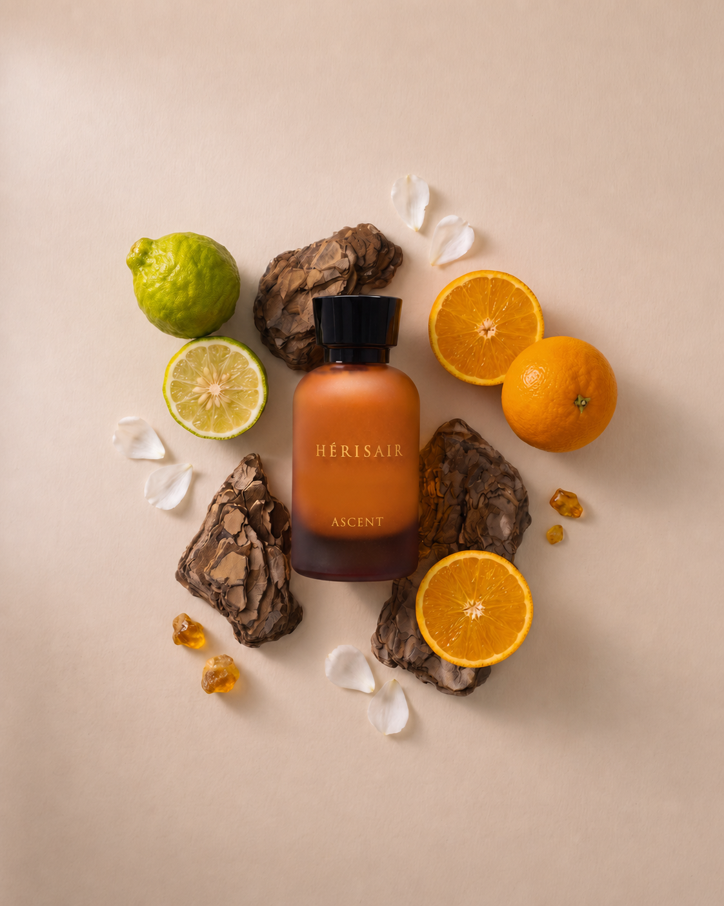

The Rise
Vision becomes
movement.
Light gathers over a horizon in motion. Luminous citrus, fruits, white musk and amber express an optimistic energy shaped by imagination and drawn towards what comes next.

The composition
Citrus · Fruity · Fresh
- Top
- Brazilian Orange · Calabrian Bergamot · Sicilian Lemon · Ginger
- Heart
- Sicilian Orange · Melon · Pear · Green Apple
- Base
- White Musk · Madagascar Vanilla · Fruity · Amber
The formulation
The Hérisair Signature
An alcohol-free milky emulsion, composed for the intimacy of the car.
Discover Eminence